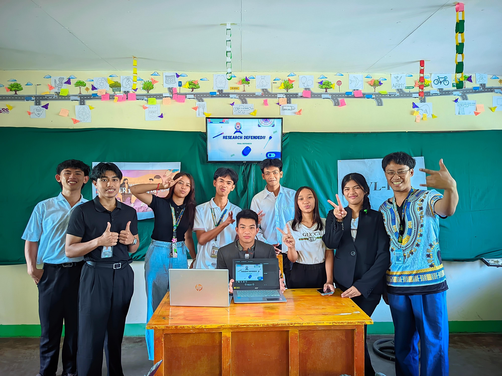
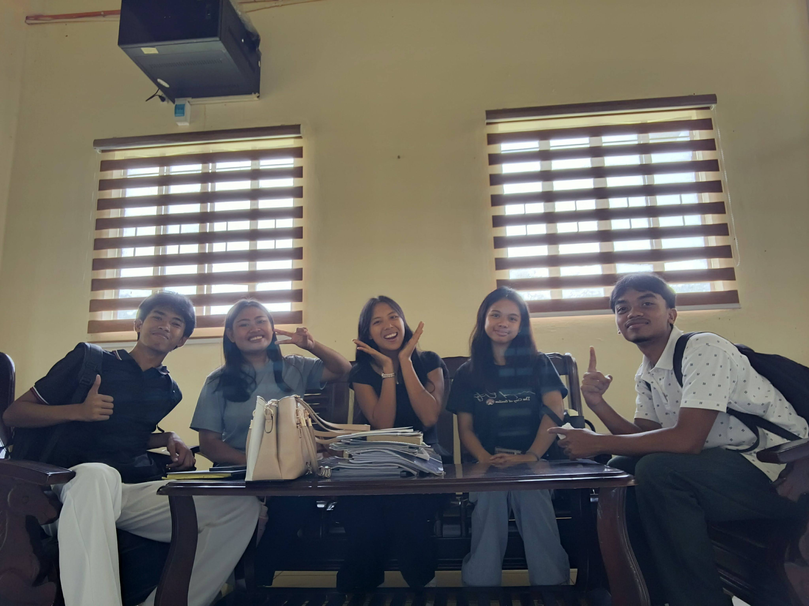
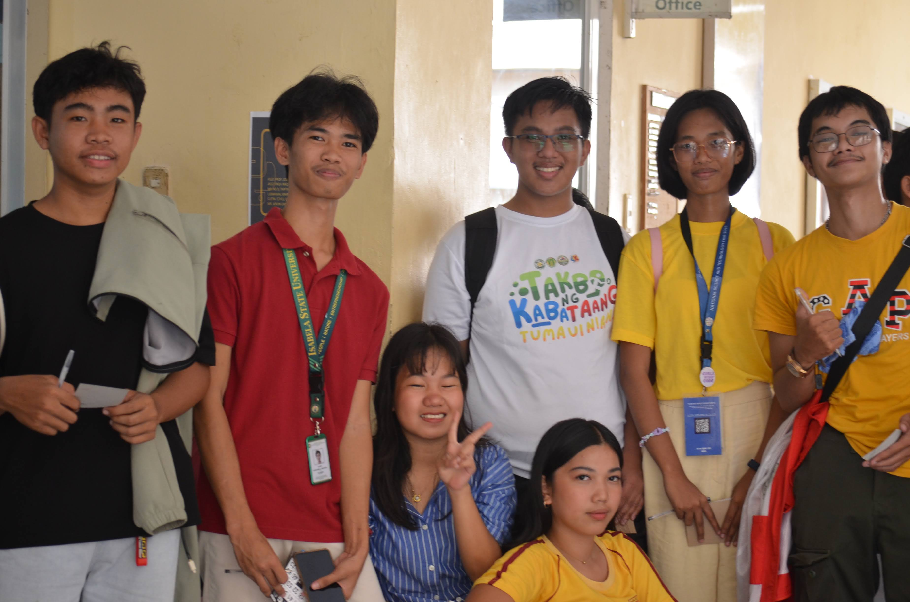
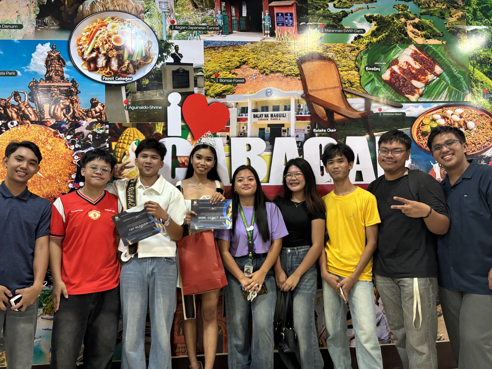
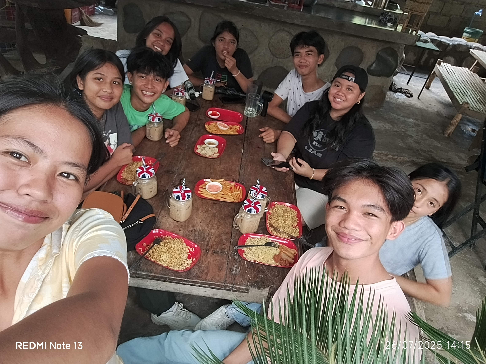

True friendship is one of the most rewarding treasures in life. Friends are the people who turn ordinary
school days into unforgettable adventures, celebrate our victories with loud cheers, and stay beside us
through challenging academic deadlines and late-night study sessions. The memories captured here
represent
true camaraderie, inside jokes, and shared experiences that time cannot erase.
Friendship Gallery

Photo 1: Senior High Circle
Cherished memories with my high school circle—days filled with youthful laughter, shared dreams, and
growth.

Photo 2: Engineering Solid Circle
Tackling college life and technical hurdles alongside solid peers who make the journey rewarding.

Photo 3: The Legends Crew
Memorable bonding times with a legendary group of friends full of humor and unforgettable banter.

Photo 4: Chill Night & Fellowship
Unwinding after busy weeks, sharing heart-to-heart talks, and toasting to friendship and future
goals.

Photo 5: The Fun & Lively Gang
The lively, playful squad where teasing and genuine care go hand in hand, creating memories that
last.